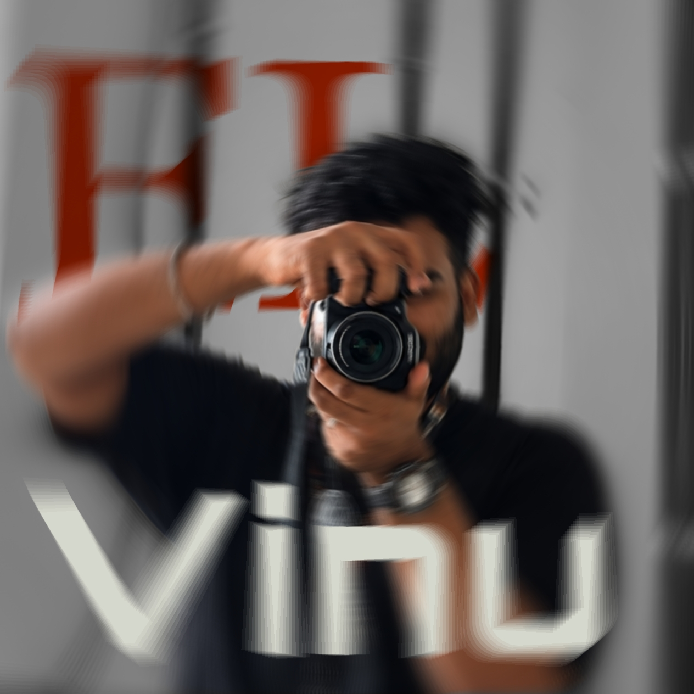

0.8 seconds
to earn
the pause.
Open on tension, texture, or a point of view — never just an effect.
01VINAYAK SABU / CREATOR SIDE / TAKE 001
Editing × motion × digital culture
I turn a feeling, a rough clip, or a half-formed brief into an edit people stop for. The camera is mine; the cut is the point.

I’m interested in the precise moment a viewer decides to stay: the sound that arrives a fraction late, the beat the caption holds back, the cut that turns ordinary footage into a story.
My creative side is less “content factory” and more cut room — equal parts editor, observer, designer, and shameless consumer of good visual language.
Visual pacing built for attention, but not at the cost of taste. Each frame earns the next.
Watch @el.vinu reels ↗Open on tension, texture, or a point of view — never just an effect.
01Editing that listens before it moves.
One good image can carry the whole feeling after the sound is gone.
04Reel embeds can be added in site-config.js. Until then, explore the live work on @el.vinu’s Reels tab ↗.
Good content notices something ordinary, then commits to the bit with enough confidence to make it feel new.
A tiny original reward at the end — a reveal, a visual echo, a second meaning — beats borrowed superhero aesthetics every time.
Trailer language is about compression: make the feeling legible before explaining the whole plot.
No film stills, logos, copyrighted characters, or lookalike designs. Only original visual work and editorial craft references.
04 / Let’s make a moment
For creator collaborations, editing, motion, visual direction, social-first digital work, or a brief that needs a more interesting point of view.